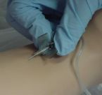
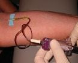

Венепункция
Для внутривенного введения лекарств и взятия крови для анализов производят венепункцию, т. е. прокол вены. Внутривенное вливание обычно осуществляет врач или фельдшер (медицинская сестра) в присутствии врача. Кровь из вены, как правило, берет средний медицинский работник. Удобнее всего пунктировать вену локтевого сгиба, при необходимости можно использовать и другие вены — на тыле кисти, тыле стопы и т. д. Больной может сидеть или лежать. Рука его должна быть максимально разогнута в локтевом суставе, под локтевой сгиб обычно подкладывают плотную клеенчатую подушку. На плечо выше локтевого сгиба достаточно туго накладывают резиновый жгут, чтобы сдавить вены, но не нарушать приток крови по артериям: пульс на лучевой артерии при наложенном жгуте должен хорошо прощупываться. Больному предлагают несколько раз сжать и разжать кулак, что способствует лучшему наполнению вены.
Фельдшер готовит свои руки, как перед операцией. Кожу локтевого сгиба больного тщательно дезинфицируют спиртом. Выбирают наиболее удобный и подходящий для пункции венозный ствол, затем кончиками пальцев левой руки кожу над ним несколько смещают книзу (в сторону предплечья), фиксируя вену. В правой руке держат приготовленную для пункции иглу. При наличии достаточного опыта одномоментно прокалывают кожу над веной и стенку самой вены. При попадании иглы в просвет вены создается впечатление как бы провала ее в пустоту и из иглы начинает вытекать кровь. Существует и двухмоментальный способ венепункции — вначале иглой прокалывают кожу, а затем, осторожно манипулируя концом иглы, подводят его к вене и прокалывают ее стенку. Для начинающего легче производить венепункцию таким способом.
Если нужно взять кровь на анализ или произвести кровопускание, под струю крови подставляют пробирку или какой-либо иной сосуд, в который и набирают нужное количество крови.


При необходимости ввести в вену лекарство его заранее набирают в шприц. Сделав прокол вены иглой, снимают наложенный на плечо жгут, держа шприц вертикально, выпускают из него некоторое количество лекарства, убеждаясь в том, что в шприце нет пузырьков воздуха, присоединяют шприц к находящейся в вене игле и вводят в вену лекарство.'При введении лекарства пункцию вены часто производят иглой, уже присоединенной к шприцу. В этом случае после прокола стенки вены осторожно потягивают за поршень шприца: если игла находится в просвете вены, в шприц будет поступать кровь. Убедившись в этом, медленно вводят в вену лекарство. По окончании вливания к месту, прокола иглы прикладывают смоченный спиртом ватный или марлевый тампон, иглу удаляют, а руку сгибают в локтевом суставе, оставляя ее в таком положении на несколько минут.
Если при введении лекарств на месте введения появляется увеличивающаяся на глазах припухлость, значит, игла находится не в просвете вены и лекарство поступает в клетчатку, окружающую вену. Нередко это сопровождается появлением на месте припухлости жжения или боли. Ряд лекарственных веществ обладает сильным раздражающим действием, и попаданием их в подкожную клетчатку может вызвать в ней вопдаление, а иногда даже некроз. Особенно осторожным нужно быть при введении растворов хлорида кальция.
Если такое осложнение произошло, нужно оставить иглу на месте, отсоединить от нее шприц с лекарством, а другим шприцем ввести через иглу в клетчатку 5—10 мл изотонического раствора хлорида натриястем, чтобы понизить концент-. рацию попавшего в клетчатку лекарственного вещества. Вливание в этом случае делают в вену другой руки, другим шприцем.
Иногда на месте прокола вены образуется кровоизлияние. Если оно невелико, то через несколько дней оно самостоятельно рассасывается. Ускорить рассасывание можно применением полуспиртовых согревающих компрессов или повязок с мазью «гирудоид», гепариновой мазью и т. п.
После вливания может развиться воспаление самой вены — ствол ее становится утолщенным, болезненным, по ходу вены может появиться покраснение кожи (флебит или тромбофлебит). Причиной иногда является внесенная в вену инфекция или чаще раздражающее действие введенного в вену лекарства. Лечение флебита состоит также в применении повязок с гирудоидом или гепариновой мазью. Движения рукой должны быть ограничены (руку лучше подвесить на косынку).
Редким, но весьма серьезным осложнением при внутривенном введении лекарств является воздушная эмболия, возникающая при технических погрешностях в том случае, когда во время вливания в вену попадает воздух. Пузырек воздуха, продвигаясь с током крови и являясь как бы воздушной пробкой, может вызвать в том или ином органе (например, в головном мозге) серьезные нарушения кровообращения.

Исходный материал взят на Sanguinarius.org
Частично изменен и переведен by Регент.

(с) Библиотека о настоящих Вампирах
realvampires.do.am
[Наверх]